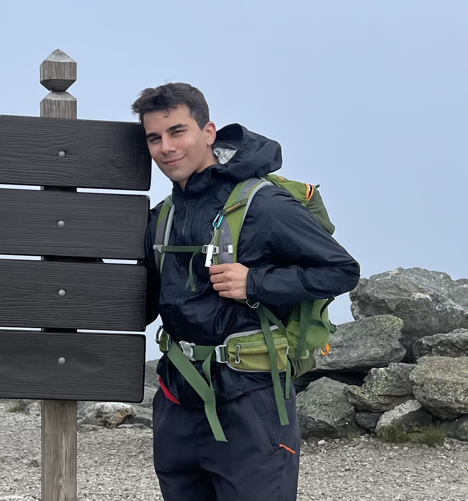

UMass Study Bytes: A Way To Save Time
Our Team!
Said

Backend SWE
Said Mazaheri is a Computer Science and Mathematics student at UMass Amherst. As a software engineering intern at P/E Investments, he contributed to a 15x increase in database entries, utilized NoSQL and SQL databases, and developed a web app in Vaadin for data management. At Caltech's Greer Research Group, he quantified nanomaterial displacement in AVI files using Python's OpenCV library. He's also engaged in computer science education, previously instructing the Infusing Computing professional development for 120 teachers and creating 90+ course materials for 150 middle and high school classes with the Game2Learn lab., Said currently serves as an UCA for Intro to AI. Said's proficiency spans Python, Java, JavaScript, C, R, SAS, SQL, and Linux.
Said Mazaheri is a Computer Science and Mathematics student at UMass Amherst. As a software engineering intern at P/E Investments, he contributed to a 15x increase in database entries, utilized NoSQL and SQL databases, and developed a web app in Vaadin for data management. At Caltech's Greer Research Group, he quantified nanomaterial displacement in AVI files using Python's OpenCV library. He's also engaged in computer science education, previously instructing the Infusing Computing professional development for 120 teachers and creating 90+ course materials for 150 middle and high school classes with the Game2Learn lab., Said currently serves as an UCA for Intro to AI. Said's proficiency spans Python, Java, JavaScript, C, R, SAS, SQL, and Linux.
Ian
Frontend SWE
Ian is a Computer Science / Mathematics double major at UMass Amherst. He has completed all but 1 core CS classes, as well as all core math classes. He has developed skills in Java, Javascript, Python, C#, and C. During the Summer of 2023, he worked on mostly front-end development at Strasz Assessment Systems, working to develop a web application using React. The application, called SetScore, is currently being used by clients to generate cutoff scores for examinations. On this project, Ian will use his experiences to work on front-end development and scripting. Ian enjoys skiing, working out, reading, and he's an excellent ping pong player.
Ian is a Computer Science / Mathematics double major at UMass Amherst. He has completed all but 1 core CS classes, as well as all core math classes. He has developed skills in Java, Javascript, Python, C#, and C. During the Summer of 2023, he worked on mostly front-end development at Strasz Assessment Systems, working to develop a web application using React. The application, called SetScore, is currently being used by clients to generate cutoff scores for examinations. On this project, Ian will use his experiences to work on front-end development and scripting. Ian enjoys skiing, working out, reading, and he's an excellent ping pong player.
Vrishabh
Frontend SWE
Vrishabh is a Computer Science major at UMass Amherst. Currently, he works as an IT Assistant at Zephyr Rugs where he manages their website through HTML/CSS using Shopify. He also spent this past winter working as an Undergraduate Research Assistant where he worked closely with a group of undergraduate students and dove into the topic of generative AI models. You can also find him at the Peer Tutoring center helping his peers in class he took previously. Outside of CS, Vrishabh enjoys making music, reading, and hanging out with his friends.
Vrishabh is a Computer Science major at UMass Amherst. Currently, he works as an IT Assistant at Zephyr Rugs where he manages their website through HTML/CSS using Shopify. He also spent this past winter working as an Undergraduate Research Assistant where he worked closely with a group of undergraduate students and dove into the topic of generative AI models. You can also find him at the Peer Tutoring center helping his peers in class he took previously. Outside of CS, Vrishabh enjoys making music, reading, and hanging out with his friends.
Overview
UMass Study Bites is a food delivery app that is targeted toward students on the UMass Amherst
flagship campus and that deals exclusively with on-campus dining hall food. Study Bites will
allow users to order food from a given dining hall through a live UMass menu, and then have the
food delivered to their dorm. This project aims to be an all-in-one, intuitive place for students
to find out what is being served around campus, as well as get that food brought to them in an organized
way. Right now, if you are a student who is sick or injured in a significant way, it can be very
difficult to get to a dining hall, and in the process, you risk getting others sick or further injuring
yourself. This app intends to help students in these situations get their food safely and without all
the hassle. Additionally, during midterms and finals, waiting in dining hall lines eats up a lot of
potential studying time. This app helps students get food conveniently, allowing them to spend their
limited time on more demanding tasks.
Application Parts
The first critical component of Study Bites is the selection of a delivery location
from a predetermined list. At release, Study Bites will limit delivery locations to
UMass Amherst dining halls, with the potential to scale the app to other on-campus
locations if popularity increases.
A second major part of Study Bites is the dining hall food selection. Our app will pull both the Grab-n-Go and dine-in menus of all 4 dining halls. The user ordering food will be able to click any of these locations and easily view its corresponding menu. The menus will be consistent with the UMass Dining app's current listings, extracting their data from a common source. From this menu, the receiving user can select up to four desired items from their specified dining hall—thereby abiding by UMass Grab-n-Go restrictions and ensuring that the deliveries are reasonably sized for carrying.
Another critical component of the app is the delivery service. Because UMass dining halls largely rely on dining plans that are accessed via UCards, involving non-UMass Amherst students in the system adds an unneeded layer of complexity. Similarly, converting the meal swipes expended in picking up food to USD that the ordering user pays becomes a difficult conversion. Instead, Study Bites relies on a token system, where all users start with one token. Delivering food to a student allows users to gain tokens, which they can then spend to get food delivered to themselves. Securing this UMass-Amherst student token system is the requirement that Study Bites accounts be made with a UMass email, thereby ensuring that students don't create multiple accounts for free tokens, especially those without meal plans. Delivery to the correct student is confirmed by the displaying of the recipient's UCard.
A second major part of Study Bites is the dining hall food selection. Our app will pull both the Grab-n-Go and dine-in menus of all 4 dining halls. The user ordering food will be able to click any of these locations and easily view its corresponding menu. The menus will be consistent with the UMass Dining app's current listings, extracting their data from a common source. From this menu, the receiving user can select up to four desired items from their specified dining hall—thereby abiding by UMass Grab-n-Go restrictions and ensuring that the deliveries are reasonably sized for carrying.
Another critical component of the app is the delivery service. Because UMass dining halls largely rely on dining plans that are accessed via UCards, involving non-UMass Amherst students in the system adds an unneeded layer of complexity. Similarly, converting the meal swipes expended in picking up food to USD that the ordering user pays becomes a difficult conversion. Instead, Study Bites relies on a token system, where all users start with one token. Delivering food to a student allows users to gain tokens, which they can then spend to get food delivered to themselves. Securing this UMass-Amherst student token system is the requirement that Study Bites accounts be made with a UMass email, thereby ensuring that students don't create multiple accounts for free tokens, especially those without meal plans. Delivery to the correct student is confirmed by the displaying of the recipient's UCard.
Data Requirements
Due to the account system of Study Bites, the web app will
need to handle user data. Necessary data will include the student's name as appears
on their UCard so that deliveries are given to the correct student, the student's phone
number, and student email to connect deliverers and recipients. Additionally, the app
will store students' commonly used addresses, and the number of orders they have placed
and delivered, to make future orders easier. Only essential user information will be
stored, with Study Bites taking special care to not store sensitive information, such as
Spire IDs. Even with this avoidance of highly sensitive information, Study Bites will need
to take special precautions to keep user data secure and to use the information responsibly.
Study Bites will also provide an avenue through which users can have their stored information
removed and their accounts deleted, thus ensuring that the web app is non-committal.
Because Study Bites revolves around delivering food between specified locations, its user interface is highly enhanced by the use of locational data. With Study Bites, this data will manifest itself on the user interface through a map feature, likely implemented through an API such as that provided by Google Maps. Through this map feature, users can navigate through delivery location and dining hall options in a more visually appealing manner than scrolling through a long list. This map also allows for the future implementation of delivery time estimates. Because geocoding, the conversion of addresses or location names into coordinate values, is a process that many providers charge for, the enumerated addresses of pick-up and delivery locations will be preemptively geocoded before release. In the future, a larger budget may allow for individuals to pin delivery locations or use their current location as the delivery point. Study Bites can also use trends in order data to improve its user experience. By keeping a list of orders placed within a determined length of time, Study Bites can observe what menu items have been popular at dining halls. Through this feature, students who regularly order said popular item will have an easier time adding it to their order, and students who may not have tried it before will be encouraged to try what other students are recommending. Similarly, Study Bites can note what menu items are often ordered in combination. Whether the items are ordered together because the flavors pair well—such as a burger and fries—or because they combine to form one dish—such as cereal and milk—this quickens the delivery process for those seeking these combinations.
For the menu view and selection feature, Study Bites will require UMass Amherst dining hall menu data. The web application will need to clearly convey the hours at which the dining hall opens and closes, as well as the times at which the menu changes. In addition to expressing this information to the user, the application will also need to limit the options available to said user. Users should not be able to place orders for dining halls that are currently closed or are closing soon and should not be able to place orders on menus that are no longer available or are changing soon. In the vein of time-sensitive menus, Study Bites should allow users to view upcoming menus, giving students the foresight to determine what they would like to eat or order later in the day. This future menu data can be extended to the creation of a pre-order feature, in which individuals place orders to be delivered hours after they place them.
With such large volumes of data being stored across so many categories, a thorough but intuitive database structure will be pivotal. The information must be not only well-structured but also updated in a runtime-friendly manner at points of low app use. For example, when no dining halls are open such as shortly after midnight, the menus for the following day can be retrieved. With the storage of user data, the respect and security of data becomes a major concern. Local laws must be abided by concerning the dispensing of user data. Beyond legal responsibilities, it is the moral responsibility of Study Bites to be transparent about what user data is stored, in what manner it is kept, and how much control the user has over its storage.
Because Study Bites revolves around delivering food between specified locations, its user interface is highly enhanced by the use of locational data. With Study Bites, this data will manifest itself on the user interface through a map feature, likely implemented through an API such as that provided by Google Maps. Through this map feature, users can navigate through delivery location and dining hall options in a more visually appealing manner than scrolling through a long list. This map also allows for the future implementation of delivery time estimates. Because geocoding, the conversion of addresses or location names into coordinate values, is a process that many providers charge for, the enumerated addresses of pick-up and delivery locations will be preemptively geocoded before release. In the future, a larger budget may allow for individuals to pin delivery locations or use their current location as the delivery point. Study Bites can also use trends in order data to improve its user experience. By keeping a list of orders placed within a determined length of time, Study Bites can observe what menu items have been popular at dining halls. Through this feature, students who regularly order said popular item will have an easier time adding it to their order, and students who may not have tried it before will be encouraged to try what other students are recommending. Similarly, Study Bites can note what menu items are often ordered in combination. Whether the items are ordered together because the flavors pair well—such as a burger and fries—or because they combine to form one dish—such as cereal and milk—this quickens the delivery process for those seeking these combinations.
For the menu view and selection feature, Study Bites will require UMass Amherst dining hall menu data. The web application will need to clearly convey the hours at which the dining hall opens and closes, as well as the times at which the menu changes. In addition to expressing this information to the user, the application will also need to limit the options available to said user. Users should not be able to place orders for dining halls that are currently closed or are closing soon and should not be able to place orders on menus that are no longer available or are changing soon. In the vein of time-sensitive menus, Study Bites should allow users to view upcoming menus, giving students the foresight to determine what they would like to eat or order later in the day. This future menu data can be extended to the creation of a pre-order feature, in which individuals place orders to be delivered hours after they place them.
With such large volumes of data being stored across so many categories, a thorough but intuitive database structure will be pivotal. The information must be not only well-structured but also updated in a runtime-friendly manner at points of low app use. For example, when no dining halls are open such as shortly after midnight, the menus for the following day can be retrieved. With the storage of user data, the respect and security of data becomes a major concern. Local laws must be abided by concerning the dispensing of user data. Beyond legal responsibilities, it is the moral responsibility of Study Bites to be transparent about what user data is stored, in what manner it is kept, and how much control the user has over its storage.
Wire Frames

Select Delivery Location
Our home page is designed to give students a cohesive overview of the application.
Directly in the middle is a map of campus, which will have the user’s dorm and the
available dining options marked. The user can click on any of the locations to begin
ordering. On the right is the list of dining options, which users can also use to
choose their desired location. The sidebar and overview of the app allow for easy
navigation and an optional overview of the app.
Real-World Connections
Every current and former student has been in a similar scenario—
they're in their tiny dorm room, the sun has set, and they need to eat. Their fridge, if they
even own one, has no food in it, and they have no car on campus to go shopping. The only way to
get the food they need is to spend an exorbitant amount on DoorDash, or walk to a dining hall
if any are open. The only problem is, these options are not always possible. The student might
be sick, injured, or cramming an assignment, and they can't afford a $20 delivery fee from DoorDash
or to waste 20 minutes in line just because it's Cajun night at Frank. Our app, Study Bites, aims
to provide a solution to this problem. It allows students to choose from any food location on campus,
make an order, and have that order delivered directly to their dorm. This simple process could save
a lot of people an incredible amount of trouble.
From the so-called ‘frat-flu' to COVID-19, it is inevitable that students will contract illnesses during their time at UMass Amherst, even if they take every means of avoiding sickness. Students can request excusals from their classes, but the same cannot be said about their meals. Similarly, students at UMass Amherst are encouraged to engage in extracurriculars—either their own hobbies or university-sponsored activities. Many of these undertakings come with a risk of physical injury, which can restrict students' abilities to navigate the campus. For some students, what stands between their dorm and food is multiple sets of stairs, the much-feared Orchard Hill, and too many yards to count. The time-honored solution to these difficulties has been asking friends to retrieve food for their injured companions, but what if UMass Minutemen all treated each other as friends in this regard? What if sick students could remain isolated in their dorms and injured students could take the much-needed time in bed to heal properly by getting food delivered to their door, all with the promise that they will pay back the favor to their community? With Study Bites, these once-hypotheticals are made possible. If a student is already at a dining hall, ready to walk back to their dorm with a full stomach or a bag of food from Grab-n-Go, they can check Study Bites to see if there are any food requests from their current dining hall to their dorm. The aforementioned student can now get an extra serving, carry it to their already-determined destination, and give it to the correct student, messaging them if needed. By getting this second portion for a student, they earn a token—and more than a token of appreciation. The Study Bite token can be redeemed on the web app so that the good samaritan can get food delivered to their desired location the next time they see fit. In this situation, a meager investment of effort by bringing additional food to their dorm allowed the student to get food delivered to them the next time they need a meal and are preoccupied, regardless of budget.
Study Bites solves two problems at once—the tradeoff of food versus time, and the shortage of good deeds on campus—all while running on UMass Amherst Minutemen's selflessness.
From the so-called ‘frat-flu' to COVID-19, it is inevitable that students will contract illnesses during their time at UMass Amherst, even if they take every means of avoiding sickness. Students can request excusals from their classes, but the same cannot be said about their meals. Similarly, students at UMass Amherst are encouraged to engage in extracurriculars—either their own hobbies or university-sponsored activities. Many of these undertakings come with a risk of physical injury, which can restrict students' abilities to navigate the campus. For some students, what stands between their dorm and food is multiple sets of stairs, the much-feared Orchard Hill, and too many yards to count. The time-honored solution to these difficulties has been asking friends to retrieve food for their injured companions, but what if UMass Minutemen all treated each other as friends in this regard? What if sick students could remain isolated in their dorms and injured students could take the much-needed time in bed to heal properly by getting food delivered to their door, all with the promise that they will pay back the favor to their community? With Study Bites, these once-hypotheticals are made possible. If a student is already at a dining hall, ready to walk back to their dorm with a full stomach or a bag of food from Grab-n-Go, they can check Study Bites to see if there are any food requests from their current dining hall to their dorm. The aforementioned student can now get an extra serving, carry it to their already-determined destination, and give it to the correct student, messaging them if needed. By getting this second portion for a student, they earn a token—and more than a token of appreciation. The Study Bite token can be redeemed on the web app so that the good samaritan can get food delivered to their desired location the next time they see fit. In this situation, a meager investment of effort by bringing additional food to their dorm allowed the student to get food delivered to them the next time they need a meal and are preoccupied, regardless of budget.
Study Bites solves two problems at once—the tradeoff of food versus time, and the shortage of good deeds on campus—all while running on UMass Amherst Minutemen's selflessness.
Integrative Experience
This project, being a web application, is a culmination of much of our computer science
education. Both Ian and Said took an HTML class in high school that introduced them to building websites and gave
them a relatively firm background for this CS-326, while Vrishabh’s past work experience at Zephyr Rugs has
provided him with a similar background. Additionally, CS-220 has been an excellent addition to the team’s skill
set, teaching all members to develop concise and effective Javascript—a skill that will be pivotal for developing
Study Bites.
Ian and Said have also worked in professional environments over the Summer of 2023, with Ian working in a team of 3 to build a web application in the React framework. Said worked independently at a Boston-based private equity firm to modernize their client management system with Vaadin. This project will allow the experience of real-world development to be reflected in coursework, synthesizing both academic and professional work.
Other academic group projects, of which all 3 group members have experience, have provided valuable experience in planning and dividing up the required work for developing this application. Ian, Said, and Vrishabh have all been left out to dry by slacking group members in the past, and have committed to contributing a valuable effort to Study Bites.
Ian and Said have also worked in professional environments over the Summer of 2023, with Ian working in a team of 3 to build a web application in the React framework. Said worked independently at a Boston-based private equity firm to modernize their client management system with Vaadin. This project will allow the experience of real-world development to be reflected in coursework, synthesizing both academic and professional work.
Other academic group projects, of which all 3 group members have experience, have provided valuable experience in planning and dividing up the required work for developing this application. Ian, Said, and Vrishabh have all been left out to dry by slacking group members in the past, and have committed to contributing a valuable effort to Study Bites.